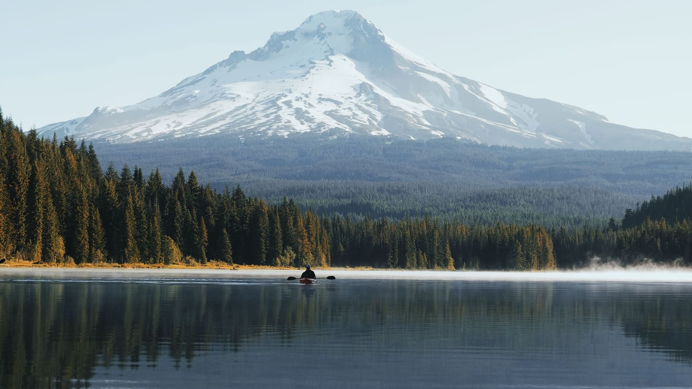

Listen on 96.7 FM
From your car in the parking lot, tune your radio to 96.7 FM.

Plan your visit
We’re a small, friendly, non-denominational church. Come as you are; here’s what a Sunday looks like so nothing catches you off guard.
The practical questions
Step by step
We start with a welcome and open in prayer.
The music team leads a mix of choruses and hymns. Stand and sing along, or just listen.
After a few announcements, anyone can share a prayer request or something to praise God for, and we pray for them together.
Kids head to junior church, and the sermon is taught straight from the Bible, often working through a book verse by verse. Some Sundays include communion.
We finish with prayer and a song. Stay for coffee and conversation afterward if you can.
Before the service
Sunday School meets at 9:30 am, the hour before the Church Service, from September to early June.
Sunday School takes a break over the summer and starts again in September. During the school year it meets at 9:30 am, the hour before the Church Service.
There are three classes: two for adults and one for children. Each class works through a Bible study, and the topic changes from time to time. It might be a survey of the whole Bible, a study of one book, or something else. Visitors are welcome to join any class.
Service times
The Sunday service is also broadcast on 96.7 FM for listening from your car in the parking lot, and streamed live on YouTube.
Find us
We’re near Molalla, Oregon.
Another way to join
From your car in the parking lot, tune your radio to 96.7 FM.
Watch live on YouTube, or catch a past service.
Watch online →